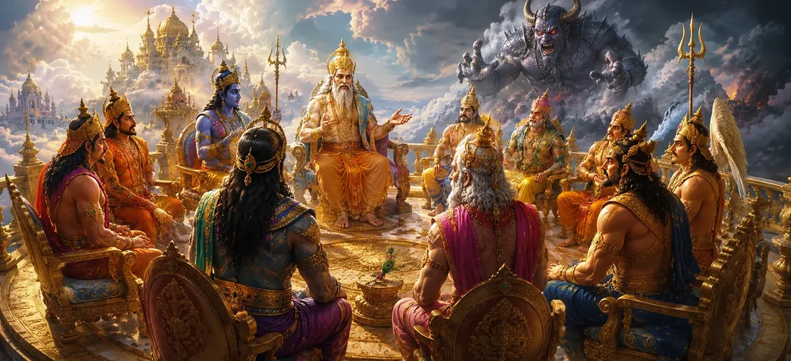

This chapter describes how the gods became increasingly concerned about the growing power of the demon Tārakāsura. Blessed with extraordinary strength and protected by a divine boon, he began oppressing the devas and disturbing the balance of the universe. Unable to defeat him through ordinary means, the gods assembled to seek a solution.
Tārakāsura had performed severe austerities and obtained powerful blessings. Empowered by these boons, he conquered many regions of the universe and challenged the authority of the gods.
The gods found themselves unable to resist Tārakāsura's growing influence. Many heavenly realms were disturbed, sacred rituals were interrupted, and fear spread among celestial beings.
Concerned for the welfare of the universe, the devas gathered together. Led by Indra and other celestial leaders, they discussed the danger posed by Tārakāsura and searched for a way to restore peace.
The gods realized that Tārakāsura could not be defeated by ordinary power. They concluded that only a divinely destined force could overcome him, and their thoughts turned toward Lord Shiva and the cosmic purpose behind Pārvatī's birth.
Unchecked power can disturb cosmic harmony.
Important challenges require unity and cooperation.
The Divine prepares solutions before crises arise.
Although the situation appeared difficult, the gods did not lose hope. Their faith in divine justice reminded them that every threat eventually meets its destined resolution.
This chapter teaches that challenges often reveal the need for higher wisdom and divine guidance. When ordinary solutions fail, faith and unity help reveal the path that has been prepared by the Divine.
The suffering caused by Tārakāsura reminded the gods that cosmic balance must always be protected. Whenever adharma becomes dominant, divine forces arise to restore harmony and righteousness.
Unknown to many, the solution to the gods' problem was already taking shape through the lives of Shiva and Pārvatī. Destiny was quietly preparing the future event that would change the course of the universe.
"When darkness grows powerful, the Divine prepares the light that will overcome it."
After discussing the growing threat of Tārakāsura, the gods realize that only the future son of Shiva can defeat the mighty demon. Continue to the next chapter to discover how the devas send Kāma, the god of love, to awaken Shiva from deep meditation and advance the divine plan.